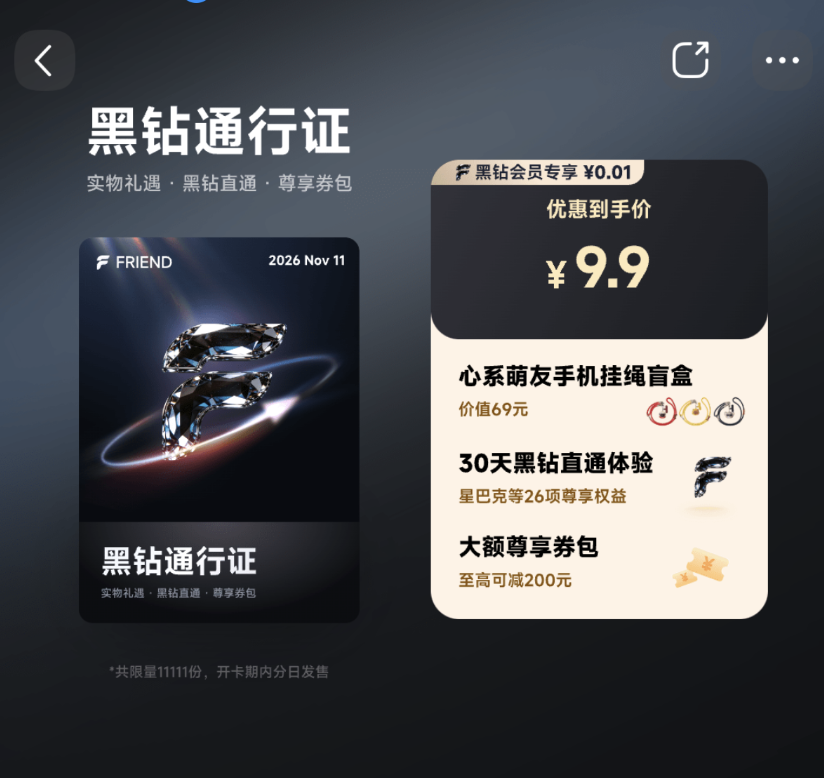
THE TECH EDIT
기술의 변화, 매일 한눈에.
카메라 · 스마트폰 · AI, 해외 테크 소식을 모아 전합니다.
최근 발행2026-10-27
새로 들어온 소식
LATEST STORIES
최신 뉴스
전체 3,925개 기사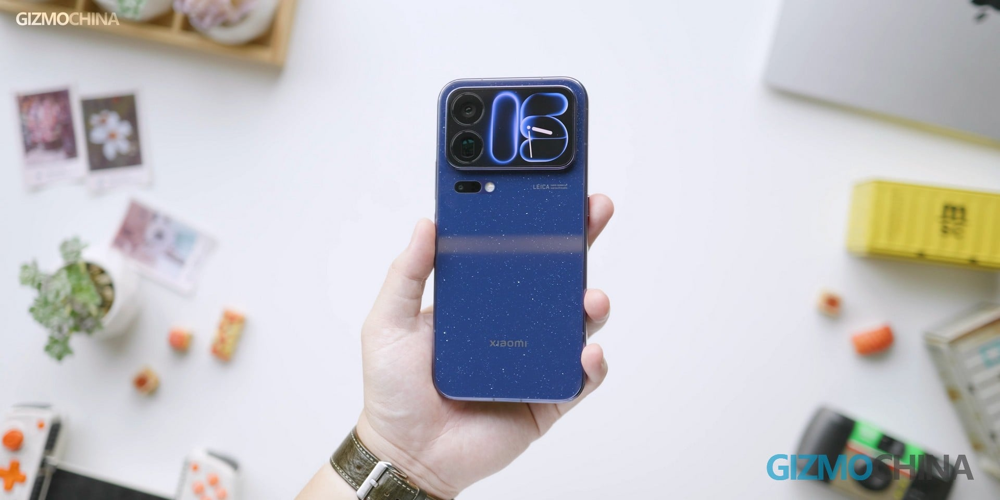
Xiaomi 18 Pro Max 리뷰: 훌륭한 스마트폰, 하지만 가격은?
베트남 최초의 반도체 프런트엔드 팹, 난관에 부딪혀 예정대로 시범 생산 어려울 듯
폴더블 디스플레이로 Apple을 저격: Samsung, Galaxy Z Fold8 광고 공개
메모리 가격 인상 영향으로 Samsung, Galaxy A 시리즈 중저가 스마트폰 20% 감산 계획

Panasonic 직원, 동료 및 가족 정보 GenAI 서비스에 무단 업로드, 33만 4천 명 피해
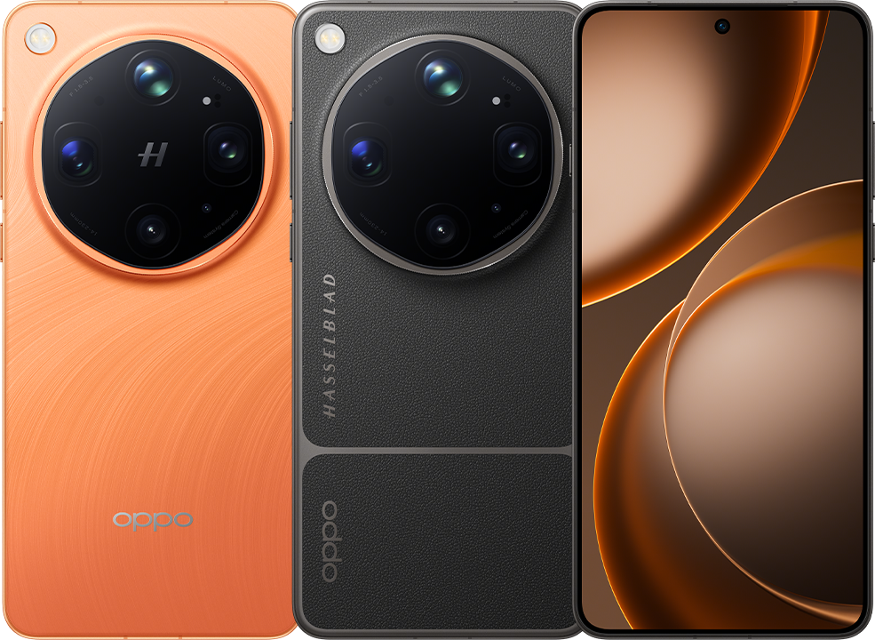
Oppo Find X10 Ultra의 상세 카메라 및 디스플레이 사양 공개
OnePlus Ace 7 Pro 카메라 샘플 공개, 200MP 메인 카메라, 3.5배 망원 줌 확인
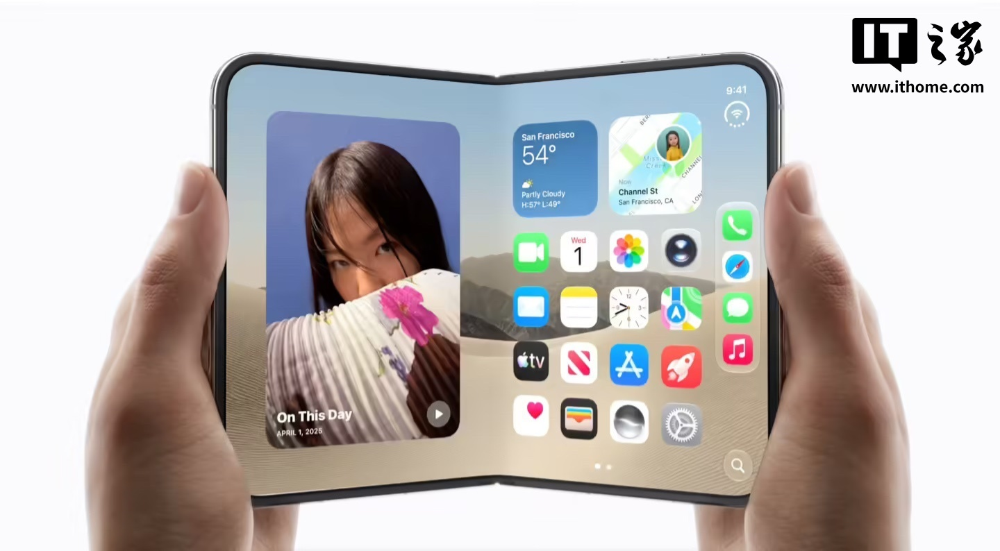
란스 테크놀로지, Apple iPhone Duo 30% 추가 주문 소문에 대해 "구체적인 비율은 언급하지 않겠지만, 생산 라인은 야근하며 생산량 늘리는 중"이라고 답변
IT之家 11.11 엄선 상품: Apple iPhone Duo 폴더블 디스플레이 스마트폰 판매 시작, 로지텍 MX Master 3S Lite 마우스 699 → 305위안
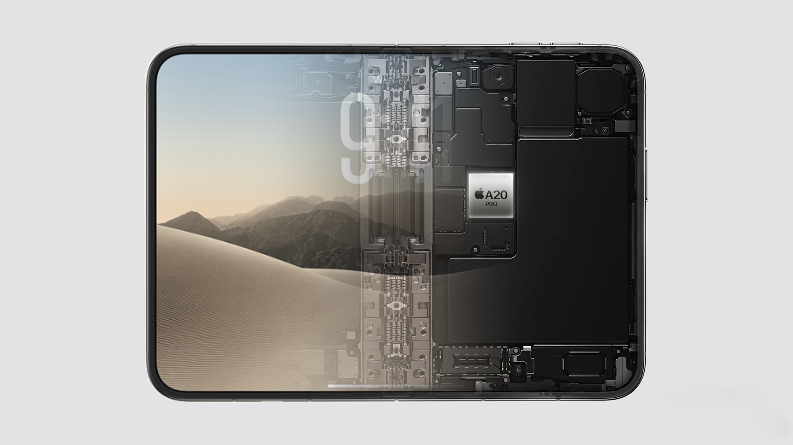
iPhone Duo 분해 결과 듀얼 배터리 및 힌지 디자인 확인
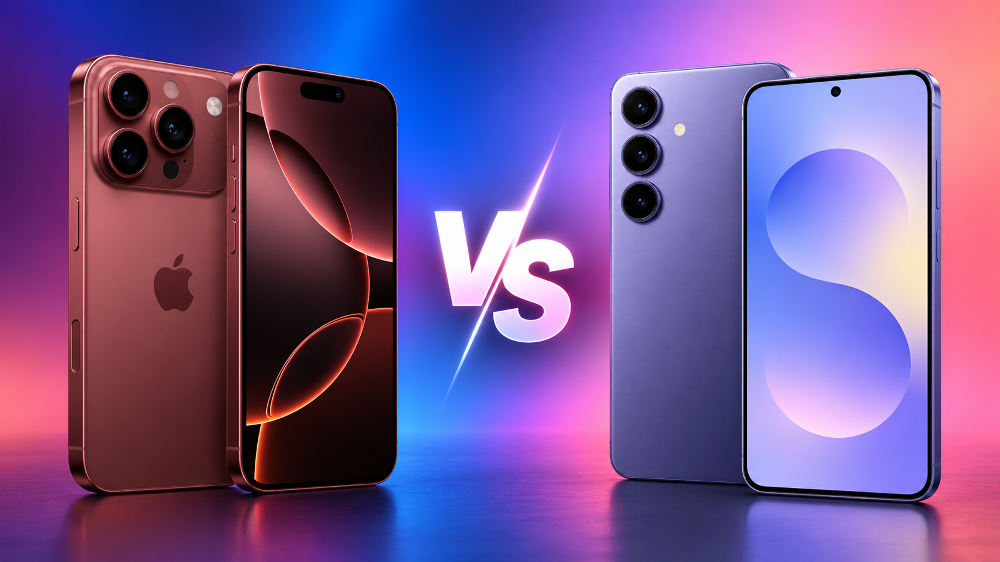
iPhone 18 Pro vs. Galaxy S26 Plus: 어떤 스마트폰을 선택할까?
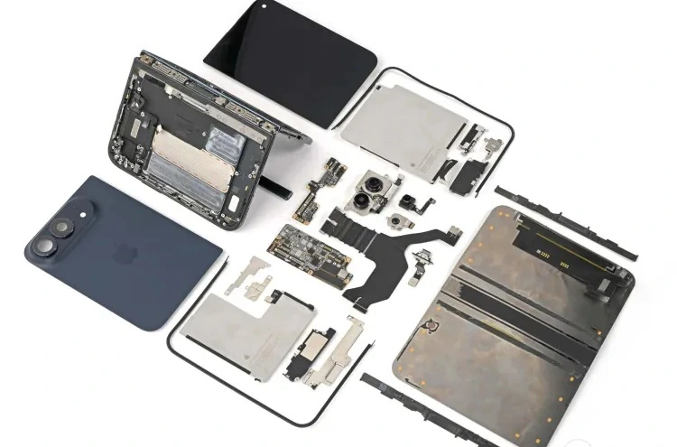
iFixit, Apple 폴더블 아이폰 듀오 분해: 폴더블 디스플레이 고장 잠재적 원인 잠정 확인
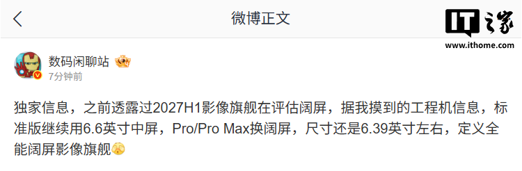
2027년 상반기 Huawei의 이미징 플래그십 스마트폰, 와이드 스크린 평가 중인 것으로 알려져

Huawei 허강: 창샹(畅享) 시리즈 스마트폰, 11년간 누적 출하량 1억 6천만 대 돌파

출시 7개월 만에 Huawei 창샹 90 시리즈 스마트폰 누적 출하량 1천만 대 돌파
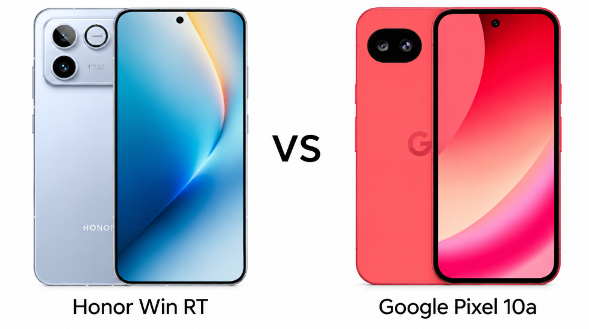
Honor Win RT vs Pixel 10a: Honor의 10000mAh 배터리 vs Google의 카메라 마법

HMD의 새로운 유럽판 Pulse Pro 스마트폰 공개, MediaTek G99 프로세서로 업그레이드
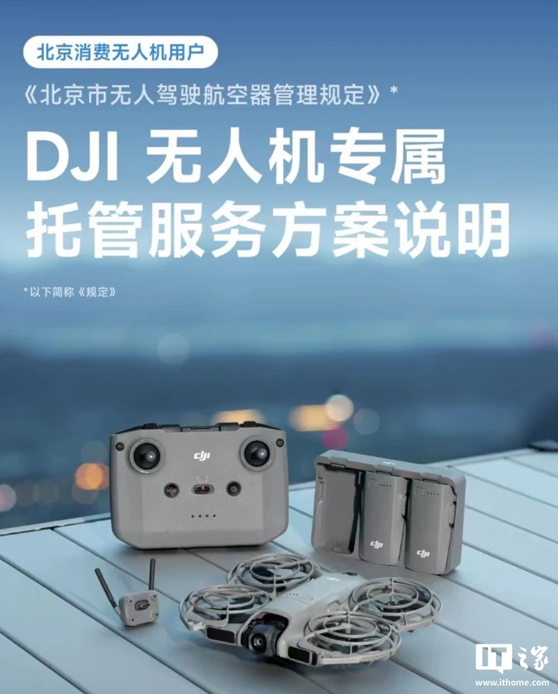
DJI, 베이징 지역 소비자 드론 전용 관리 서비스 출시: 최장 1년 무료 보관, 이후 대당 연간 199위안

Apple iPhone 듀오, 단축어 추가로 펼치거나 접을 때 사전 설정된 작업 실행 가능
Apple iPhone Duo 내부 스크린 '균열' 문제, 더 많은 사용자 불만 접수
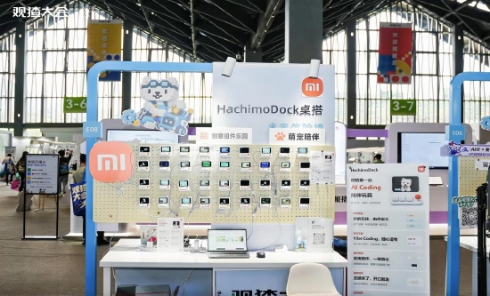
Xiaomi 오픈소스 하드웨어 HachimoDock 공개, 150위안으로 만능 AI 데스크톱 펫 복제 가능
검색 결과가 없습니다
다른 검색어를 입력하거나 필터를 초기화해 보세요.